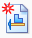

Create a PMI drawing view
You can create drawings from PMI model views along with their dimensions and annotations.
When starting from a model document
-
Choose File menu→New→Drawing of Active Model

.Alternatively, you can right-click the model view node in PathFinder or in the Model View palette and select Create Drawing.
-
In the Create Drawing dialog box, select a drawing template, and then one of the following:
-
-
Create standard views: To create front, top, and side views (Isometric views for assemblies)
-
Run Drawing View Creation Wizard: To open the View Wizard with the drawing views in the dynamic display mode
-
Create from Model View: To create a drawing from the selected the model view and display it in the dynamic display mode
When you select this option, the Model Views list becomes available.
-
-
-
On the drawing sheet, click to place the model view.
When starting from a draft document
-
Choose Home tab→Drawing Views group→View Wizard command .
-
In the Select Model dialog box, select a model document to create the drawing from and then click OK to continue.
-
In the View Wizard, click Drawing View Wizard Options .
-
In the Drawing View Wizard dialog box, do the following:
-
From the PMI Model View list (or from the Configuration and PMI Model View list for an assembly), select the PMI model view name.
Model view names are preceded by the icon,
 .
. -
Select the following check boxes:
-
Include PMI dimensions from model views to copy the PMI dimensions from the PMI model view to the drawing view.
-
Include PMI annotations from model views to copy the PMI annotations from the PMI model view to the drawing view.
Tip:These options also specify that the drawing view is associative to the model view. Any changes made to the PMI model view will cause the drawing view to go out of date.
-
-
Click OK to close the Drawing View Wizard dialog box.
-
-
On the drawing sheet, click to place the model view.
Tip:-
You can easily add more PMI model views to the drawing sheet by dragging them from the Model Views Palette pane.
You can also select the required model from the list and retrieve all the model views for it.
To access this palette, choose Home tab→Drawing Views group→Model View Palette command
 . For more information, see Show model views in a palette.
. For more information, see Show model views in a palette. -
You can generate a dimensioned and annotated orthographic or section drawing view of the model using the Home tab→Dimension group→Retrieve Dimensions command.
-
You can use the Maintain Alignment Set command to align your PMI dimensions and create alignment sets. Alignment sets make it easy to manipulate dimensions all at once.
-